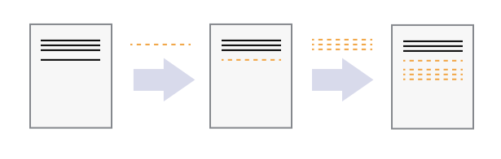
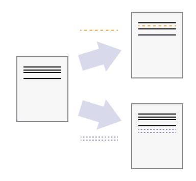
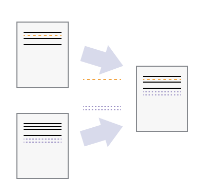

Introduction to version control with Git and GitHub
2025-09-16
What and why is version control?
- “Version control” is about managing and tracking different versions of files
- E.g. program code, \(\mathrm{\TeX}\) sources, config files
- Great for collaborations, but also helpful for using it on your own

Tracking versions versus changes
Version control tracks different version of files
Equivalently: it tracks changes made to files
In version control lingo, a “version” is also called commit
From the verb “commit”, which can mean
to consign or record for preservation;
to commit something to memoryLet’s visualize this
Tracking changes
- Start with a base version of a document
- Track changes to content

- May also track who made the change, when and why?
- Viewpoint of tracking changes opens up new possibilities
Collaboration
If unrelated changes are made…

… we may be able to merge them into one document

Tools
- Version control can be done completely manually
- But this is about automated version control
- with a VCS (version control system), such as Git
- A VCS provides tooling to record and track commits and interact with them
- Git is the de facto industry standard (for now)
GitHub ≠ Git
- Some people think GitHub and Git are synonymous
- This is wrong: GitHub is “just” a website hosting data recorded by
git - There are many others, e.g. GitLab, Codeberg, SourceForge, etc.
- but GitHub is what OSCAR uses (for now)
- These websites often offer much more (e.g. issue tracker, website hosting, …)
Different ways of working on a repository
- A repository is a storage area where Git stores the full history of commits of a project
- If it is on GitHub, you can edit with just your web browser
- For more complex work you should do it locally on your compute
- Either via terminal commands (most powerful and flexible)
- Or via a graphical interface, e.g. VS Code (easier to learn?)
Exercise: Edit Summer School website
Goal: Add your GitHub username to the participants list via the web browser
go to the “participants” list on the Summer School website
locate the “Edit this page” link
use it and make the change (you need to insert 1 line)
create the pull request
Preparing for Git and GitHub
Tell git who you are, via terminal:
git config --global user.name "John Doe" git config --global user.email johndoe@example.comOf course use your own name and email address instead 😬
Privacy warning: This data will be associated with your subsequent Git activity
Set your real name on GitHub: https://github.com/settings
For terminal users: install
ghvia https://cli.github.comIf you use VS Code, install “GitHub Pull Requests” extension
What are clones and forks ???
A clone of a repository is a copy of all data and history
Original and copy may be on the same computer, or one or both on a remote computer
If both are on a remote computer, we call the copy a fork
All copies of the repo (including original) can now undergo history changes
Now the FUN starts: histories can diverge
Let’s visualize this
Cloning and forking
Fork the repository https://github.com/oscar-system/SummerSchool2025_Playground in the GitHub web interface.
Clone your fork to your computer. (Hint:
git clone)In your local clone, in the
solutionsdirectory: create a subdir with your name, in it add a file with solutions to some exercises.Commit the new file and push to your fork. (Hint:
git add,git commit,git push)
Pulling and pull requests
- You just pushed data from your local repository to a remote one
- The opposite operation is pull (
pull=fetch+merge) - One can also push and pull between forks of a repository
- A pull request is … a request for someone to pull your changes 🤓
- Exercise: Go to your fork of the repository on the GitHub website. From there, create a pull request to merge the additions into the original repository.
Reporting issues
- GitHub manages not just git repositories, but also has an issue tracker
- Exercise:
- Go to https://github.com/oscar-system/SummerSchool2025_Playground
- Open a new issue: report that the bikeshed color in the README is wrong.
- Be constructive and suggest to what it should be changed instead (e.g. your favorite color).
Using branches
- We’d like to be good citizens and not just complain but actually fix the obviously wrong bikeshed color.
- Best practice: use branches
- A branch is just a “label” or “pointer” referencing a specific commit
- Helps you manage diverging history
Managing branches
In git there is usually an active branch
Making commits updates the active branch
Create a new branch using
git branch NEWBRANCH, list branches usinggit branchSwitch between branches using
git switchorgit checkoutMerge diverging history with
git mergeLet’s visualize this
Exercise: change the bikeshed color
git pullour exercise repository- Create a new branch
- In it, edit
README.mdto have the correct color; commit your changes - Push this to your fork, open a pull request as before
Dealing with merge conflicts
- Unfortunately, someone else made a conflicting change: they replace the bikeshed color by another color – unfortunately still the wrong one
- This caused a merge conflict
- You need to deal with this: in your local cone, switch to the
mainbranch, and pull the latest version. - Switch back to your work branch, and
git mergethe master branch - Resolve the merge conflicts, then commit and push
- Verify your pull request was updated
Advanced: gh command line tool
- Install the
ghtool from https://cli.github.com - Some things it does for you:
- takes care of passwords etc.:
gh auth loginonce - submit pull requests with ease
- create, clone, fork, and view repositories
- browse and manage issues and pull requests
- … and much more
- takes care of passwords etc.:
The End